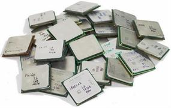
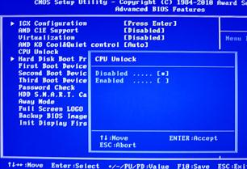
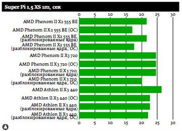

Разблокирование процессоров AMD. Мифы и реальность.

При покупке компьютера в Минске
у нас встречается множество баек и «правдивых» историй о чудесном превращении средненького двухъядерника от AMD в мощного,
четырехголового монстра. Неистребимая тяга к «бесплатному сыру» побуждает пытливые умы к рискованным экспериментам со своими компьютерами. Кому то везет и
процессор становится четырехъядерным. Кому то, вместо ожидаемых чудесных превращений с экрана монитора весело подмигивает до боли родной и знакомый всем
пользователям, синий экран смерти. Конечно, эта проблема легко снимается, достаточно лишь вернуть стандартные настройки BIOS при перезагрузке, но о
разблокировании процессора придется забыть. Основная цель разблокирования процессора - добиться значительного прироста производительности сохранив при этом
надежность и стабильность в работе. Даже удачное на первый взгляд добавление двух новых голов процессору не гарантирует увеличения его производительности, а
впоследствии может стать лишней головной болью из за начавшихся вдруг "глюков" и сбоев системы.

Таким образом, утверждение, что любой двухъядерный процессор AMD можно легко превратить в четырехъядерный - это миф. Реально же увеличить количество ядер
возможно лишь у нескольких моделей семейства AMD Phenom II и AMD Athlon II. По заключению специалистов одной из тестовых лабораторий, из всех протестированных
ими процессоров лучшие результаты показали процессоры AMD Phenom II X3 720 (9188558D90001 и 9188558D90009) , AMD Athlon II X3 440(9008681А00125 и 9008681А00126)
и AMD Phenom II X2 555 BE (9С62082А00211 и 9С62082А00213) Не имеет смысла приводить здесь весь список протестированных моделей и методику тестирования. Все это
можно найти в интернете, отправив соответствующий запрос поисковой системе. А пока рассмотрим результаты тестирования.

Не смотря на то, что все трехъядерные модели легко превратились в четырехъядерные и показали стабильность в работе компьютера, нужно отметить, что результаты
тестирования после разгона абсолютно одинаковые. Другими словами, если планируется оверклок процессора, то разблокировка не имеет смысла, так как добавление
еще одного ядра ни как не влияет на показатели разгона. Более того, AMD Phenom II X3 720 (9188558D90001) после разблокирования совсем отказался разгоняться,
показав
синий экран смерти.
Более подробно рассмотрим процессоры игровых компьютеров линейки AMD Phenom II X2 555 BE, показавшие лучшие результаты. Операции по разблокированию подверглись
два камня этой линейки, AMD Phenom II X2 555 BE (9С62082А00211) и AMD Phenom II X2 555 BE(9С62082А00213). Прежде всего, следует отметить удачный выбор
материнской платы компьютера для тестирования. Благодаря функциональности и разгонному потенциалу платы GIGABYTE GA-890XA-UD3 результаты разблокирования
процессоров превзошли все ожидания. Чтобы включить функцию разблокирования в этой плате достаточно лишь выставить значение Enabled в меню CPU Unlock в BIOS.
В итоге, вместо заявленного AMD Phenom II X2 555 BE 3200МГц. получаем AMD Phenom II X4 955 BE 3200МГц. Причем, сменилось не, только название камня, но и
производительность его возросла более чем в два раза. После экспериментов с разгоном полученного процессора средствами материнской платы, окончательным результатом
грамотного подхода к задаче разблокирования ядер стал процессор AMD Phenom II X4 955 BE с частотой 4128 МГц.
Подводя итог вышесказанному, хотелось бы подчеркнуть, что не смотря на простоту операции по разблокированию процессоров AMD, она требует определенной подготовки.
Прежде всего, желательно изучить отчеты тестовых лабораторий, возможно мнение специалистов поможет вовремя отказаться от бессмысленной затеи. Далее необходимо
посмотреть дополнительную маркировку на крышке теплораспределителя выбранного процессора и сравнить этот номер с номером тестового образца. В приведенном выше
примере разблокирования процессоров линейки AMD Phenom II X2 555 BE тестировались два камня с маркировкой 9С62082А00211 и 9С62082А00213. Чем ближе к совпадению
три последние цифры в маркировке - тем больше вероятности, что кремневые кристаллы у них из одной партии, а, следовательно, и результат разблокирования выбранного
процессора будет таким же как у тестового образца. Кроме этого нельзя не учитывать возможность, что на выбранном для разблокирования процессоре, фирмой -
производителем на этапе вторичной проверки были заблокированы дефектные ядра. В этом случае результат разблокирования непредсказуем.
Читайте также:
8-ядерные процессоры производства AMD: FX 8320, FX 8300 и FX 8350.
Оптические процессоры - компьютерные технологии будущего.
Сравнение процессоров AMD.
Следующая статья:
Источники Бесперебойного Питания. Четко о главном.